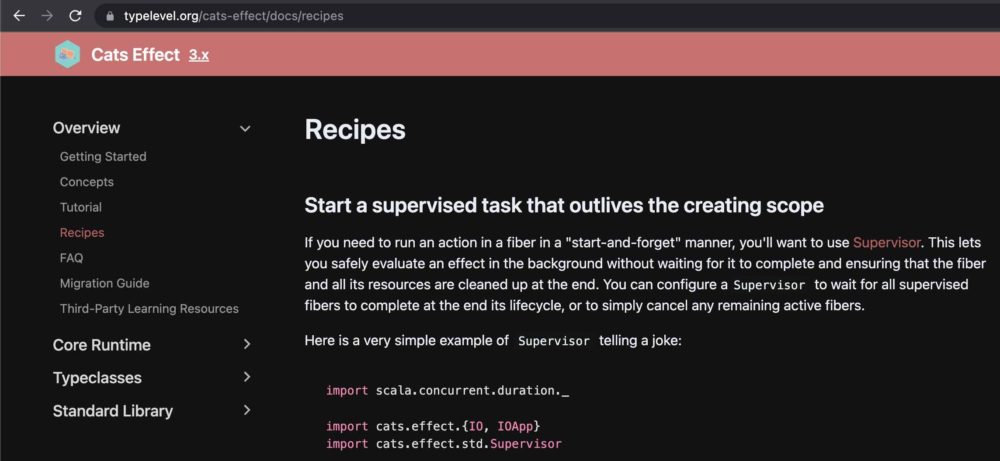

class: center, middle # Cats Effect: Supervisor, Dispatcher, IOLocal <img src="img/cats-effect-logo.svg" height="150"> Kamil Kloch • [@kamil_k] • [Superfund Technologies](https://superfund-technologies.com) ??? Hello, very happy to be here, in person not over a Zoom call Also honored, to have this opportunity to talk to @Scalar - a very fine Scala event SoftwareMill is one of the bright stars on the Scala ecosystem I would like to start - used CE in our company (web backend) - came across 'standard' industry questions - struggled to find a solution - CE and fs2 tight together - we will (hopefully) solve the problems, but more importantly, look a bit under the hood of CE internals: - fibers - IOApp - IORuntime - structured concurrency - Local state <!-- &*&*&*&*&*&*&*&*&*&*&*&*&*&*&*&*&*&*&*&*&*&*&*&*&*&*&*&*&*&*&*&*&*&*&*&*&*&*&*&*&*&*&*&*&*&*&*&*&*&*&*&*&*&*&* --> --- ##Plan of the talk 1. Ask for 3 recipes 🍲 - implement an imperative resource-safe web socket client - wrap asynchronous callbacks into an [fs2] Stream - enrich logging with (scoped) contextual data -- 2. Diverge into Cats-Effect internals: - fibers - structured concurrency - IORuntime - IOApp - local state -- 3. Propose 3 recipes using [Supervisor][supervisor], [Dispatcher][dispatcher] and [IOLocal][io-local] <!-- &*&*&*&*&*&*&*&*&*&*&*&*&*&*&*&*&*&*&*&*&*&*&*&*&*&*&*&*&*&*&*&*&*&*&*&*&*&*&*&*&*&*&*&*&*&*&*&*&*&*&*&*&*&*&* --> --- ##Cats Effect Recipes 🍲  -- - Propose an idea for a recipe: [issues/3439](https://github.com/typelevel/cats-effect/issues/3439) - Write a recipe yourself! 💪 🍲 <!-- &*&*&*&*&*&*&*&*&*&*&*&*&*&*&*&*&*&*&*&*&*&*&*&*&*&*&*&*&*&*&*&*&*&*&*&*&*&*&*&*&*&*&*&*&*&*&*&*&*&*&*&*&*&*&* --> --- ##mdoc setup ```scala import cats.implicits._ import cats.effect._ import cats.effect.implicits._ import cats.effect.std.{Supervisor, Queue, Dispatcher} import cats.effect.unsafe.implicits.{global => ioRuntime} import scala.concurrent.duration._ import fs2.Stream import com.typesafe.scalalogging.{CanLog, Logger} import com.typesafe.scalalogging.LoggerTakingImplicit // Custom `unsafeRunSync` for mdoc reasons import daenyth.talk.ce.MdocConsoleWorkaround._ // custom `log.infoConsole` for mdoc reasons import MdocConsoleLoggerWorkaround._ ``` <!-- &*&*&*&*&*&*&*&*&*&*&*&*&*&*&*&*&*&*&*&*&*&*&*&*&*&*&*&*&*&*&*&*&*&*&*&*&*&*&*&*&*&*&*&*&*&*&*&*&*&*&*&*&*&*&* --> --- ##Task 1: Web Socket client Implement a __resource-safe__ imperative client for: - sending data over a web socket connection - so that releasing the client resource also shuts down all the underlying connections ```scala trait WebSocketClient { def sendMessage(msg: String): IO[Unit] } val clientResource: Resource[IO, WebSocketClient] = ??? clientResource.use { client => client.sendMessage("Hello, Scalar 2023!") } ``` <!-- &*&*&*&*&*&*&*&*&*&*&*&*&*&*&*&*&*&*&*&*&*&*&*&*&*&*&*&*&*&*&*&*&*&*&*&*&*&*&*&*&*&*&*&*&*&*&*&*&*&*&*&*&*&*&* --> --- ##Task 1: Web Socket client Implement a __resource-safe__ imperative client for: - sending data over a web socket connection - so that releasing the client resource also shuts down all the underlying connections ```scala *trait WebSocketClient { * def sendMessage(msg: String): IO[Unit] *} val clientResource: Resource[IO, WebSocketClient] = ??? clientResource.use { client => client.sendMessage("Hello, Scalar 2023!") } ``` <!-- &*&*&*&*&*&*&*&*&*&*&*&*&*&*&*&*&*&*&*&*&*&*&*&*&*&*&*&*&*&*&*&*&*&*&*&*&*&*&*&*&*&*&*&*&*&*&*&*&*&*&*&*&*&*&* --> --- ##Task 1: Web Socket client Implement a __resource-safe__ imperative client for: - sending data over a web socket connection - so that releasing the client resource also shuts down all the underlying connections ```scala trait WebSocketClient { def sendMessage(msg: String): IO[Unit] } *val clientResource: Resource[IO, WebSocketClient] = ??? clientResource.use { client => client.sendMessage("Hello, Scalar 2023!") } ``` <!-- &*&*&*&*&*&*&*&*&*&*&*&*&*&*&*&*&*&*&*&*&*&*&*&*&*&*&*&*&*&*&*&*&*&*&*&*&*&*&*&*&*&*&*&*&*&*&*&*&*&*&*&*&*&*&* --> --- ##Task 1: Web Socket client Implement a __resource-safe__ imperative client for: - sending data over a web socket connection - so that releasing the client resource also shuts down all the underlying connections ```scala trait WebSocketClient { def sendMessage(msg: String): IO[Unit] } val clientResource: Resource[IO, WebSocketClient] = ??? *clientResource.use { client => * client.sendMessage("Hello, Scalar 2023!") *} ``` <!-- &*&*&*&*&*&*&*&*&*&*&*&*&*&*&*&*&*&*&*&*&*&*&*&*&*&*&*&*&*&*&*&*&*&*&*&*&*&*&*&*&*&*&*&*&*&*&*&*&*&*&*&*&*&*&* --> --- ##Task 2: fs2 Stream from callbacks Given a callback-based API: - enqueue the messages from the callbacks into an [fs2] stream - preserve the ordering of the messages - make it lightweight for the thread invoking the callbacks ??? this fs2 stream is actually the sending side of a web socket connection -- ```scala abstract class CallbackAPI { `def onMessage(msg: String): Unit` } new CallbackAPI { override `def onMessage(msg: String): Unit` = { // enqueue the message into an fs2 Stream // preserve message ordering // do not congest the caller thread } } ``` <!-- &*&*&*&*&*&*&*&*&*&*&*&*&*&*&*&*&*&*&*&*&*&*&*&*&*&*&*&*&*&*&*&*&*&*&*&*&*&*&*&*&*&*&*&*&*&*&*&*&*&*&*&*&*&*&* --> --- ##Task 3: Contextual logging Enrich log messages with contextual data (e.g. correlation id). (Think tracing, but in logs) -- Logging libraries for Scala with contextual logging: - [blindsight](https://github.com/tersesystems/blindsight) - [logstage](https://izumi.7mind.io/logstage/index.html) - [log4cats](https://github.com/typelevel/log4cats) - [odin](https://github.com/valskalla/odin) - [scala-logging](https://github.com/lightbend-labs/scala-logging) - [scribe](https://github.com/outr/scribe) - [woof](https://github.com/lego/woof) -- Recommended reading: [why-i-wrote-a-logging-library](https://tersesystems.com/blog/2020/05/26/why-i-wrote-a-logging-library/) <!-- &*&*&*&*&*&*&*&*&*&*&*&*&*&*&*&*&*&*&*&*&*&*&*&*&*&*&*&*&*&*&*&*&*&*&*&*&*&*&*&*&*&*&*&*&*&*&*&*&*&*&*&*&*&*&* --> --- ##Tasks - revisited.super[CE3] 1. Web socket client: how to manage the (non-standard) lifecycle of a [fiber]? 2. [fs2] Stream from callbacks: how to safely and efficiently run `IO` from within unsafe code? 3. Contextual logging: how to propagate data across a forked [fiber]? ??? 1. non-standard - e.g. beyond the scope of a function <!-- &*&*&*&*&*&*&*&*&*&*&*&*&*&*&*&*&*&*&*&*&*&*&*&*&*&*&*&*&*&*&*&*&*&*&*&*&*&*&*&*&*&*&*&*&*&*&*&*&*&*&*&*&*&*&* --> --- ##Fibers [Fibers][fiber] are *the* fundamental abstraction in Cats Effect. All effects in IO are executed by some fiber. -- Compared to operating system threads, fibers: - are *very* lightweight (~150 bytes) - scale indefinitely (with memory being the limiting factor) - (performance may actually *increase* with the number of fibers!) - can be created and started extremely fast - are strongly typed - support asynchronous callbacks - can be safely, efficiently and reliably canceled at any point in time - cancelation can be suppressed within scoped regions - support resource handling ??? - managed by the application runtime - __semantic__ sequentiality, as opposed to __strict__ sequentiality in threads - Threads are scarce — Threads on the JVM map to the operating system level threads - upper bound - thread stop operation has been deprecated. - context switching: from Daniel's talk - page faults account for 30% of total runtime of the application - composability — not typed, no return type. The asynchronous support in particular has profound effects, since it means that any individual "step" of a fiber (much like a statement in a thread) may be either synchronous in that it runs until it produces a value or errors, or asynchronous in that it registers a callback which may be externally invoked at some later point, and there is no fundamental difference between these steps: they're just part of the fiber. This means that it is just as easy to define business logic which weaves through asynchronous, callback-oriented actions as it is to define the same logic in terms of classically blocking control flows. resources gracefully released as early as possible within an application. First off, is cooperative. When one fiber calls cancel on another fiber, it is effectively a request to the target fiber. If the target fiber is unable to cancel at that moment for any reason, the canceling fiber asynchronously waits for cancelation to become possible. Once cancelation starts, the target fiber will run all of its finalizers (usually used to release resources such as file handles) before yielding control back to the canceler. Conversely, interrupt always returns immediately, even if the target Thread has not actually been interrupted. If a fiber is performing a series of actions which must be executed atomically (i.e. either all actions execute, or none of them do), it can use the IO.uncancelable method to mask the cancelation signal within the scope, ensuring that cancelation is deferred until the fiber has completed its critical section. This is commonly used in conjunction with compound resource acquisition, where a scarce resource might leak if the fiber were to be canceled "in the middle". This differs considerably from Thread#interrupt, which cannot be suppressed. <!-- &*&*&*&*&*&*&*&*&*&*&*&*&*&*&*&*&*&*&*&*&*&*&*&*&*&*&*&*&*&*&*&*&*&*&*&*&*&*&*&*&*&*&*&*&*&*&*&*&*&*&*&*&*&*&* --> --- ## Threads vs Fibers <table class="table table-dark table-striped"> <thead> <tr> <th></th> <th>Threads</th> <th>Fibers</th> </tr> </thead> <tbody> <tr> <td>Availability</td> <td><span class="red">scarce</span> - thousands per JVM</td> <td><span class="green">abundant</span> - millions</td> </tr> <tr> <td>Performance</td> <td><span class="red">degrades</span> as # rises</td> <td><span class="green">increases</span> as # rises<sup>*</sup></td> </tr> <tr> <td>Creation</td> <td><span class="red">expensive</span></td> <td><span class="green">cheap</span></td> </tr> <tr> <td>Multi-tasking</td> <td><span class="red">pre-emptive</span></td> <td><span class="green">cooperative</span></td> </tr> <tr> <td>Context switching</td> <td><span class="red">expensive</span></td> <td><span class="green">cheap</span> via yield</td> </tr> <tr> <td>Composability</td> <td><span class="red">missing</span></td> <td><span class="green">typed</span> and <span class="green">composable</span></td> </tr> <tr> <td>Interruption</td> <td><span class="red">unsafe</span></td> <td><span class="green">safe</span> and <span class="green">efficient</span></td> </tr> </tbody> </table> <sup>*</sup>with a clever IORuntime <!-- &*&*&*&*&*&*&*&*&*&*&*&*&*&*&*&*&*&*&*&*&*&*&*&*&*&*&*&*&*&*&*&*&*&*&*&*&*&*&*&*&*&*&*&*&*&*&*&*&*&*&*&*&*&*&* --> --- ##Run your IOs from within IOApp IOApp is the primary entry point to a Cats Effect application - takes care of properly setting up `IORuntime` - optimizes for an application fully contained within the `run` method. - sets up [starvation checking](https://typelevel.org/cats-effect/docs/core/starvation-and-tuning) and [fiber dumps](https://typelevel.org/cats-effect/docs/core/fiber-dumps) - translates SIGTERM to IO cancelation - `.unsafeRun()` does not - fatal exceptions more likely to be captured and logged before terminating - handles `run / fork := true` and `run / fork := false` in sbt <!-- &*&*&*&*&*&*&*&*&*&*&*&*&*&*&*&*&*&*&*&*&*&*&*&*&*&*&*&*&*&*&*&*&*&*&*&*&*&*&*&*&*&*&*&*&*&*&*&*&*&*&*&*&*&*&* --> --- ##Fibers are low-level 🧨 ```scala def ioNever = IO.never.as(1).onCancel(IO.println("canceled")) def ioError = IO.raiseError(new Exception).as(1) def fiberSum = for { f1 <- ioError.start f2 <- ioNever.start x <- f1.joinWithNever y <- f2.joinWithNever } yield x + y // 🧨🧨🧨 leaking fiber! fiberSum.attempt.yolo() // res1: Either[Throwable, Int] = Left(value = java.lang.Exception) (ioError, ioNever).parMapN(_ + _).attempt.yolo() // canceled // res2: Either[Throwable, Int] = Left(value = java.lang.Exception) ``` <!-- &*&*&*&*&*&*&*&*&*&*&*&*&*&*&*&*&*&*&*&*&*&*&*&*&*&*&*&*&*&*&*&*&*&*&*&*&*&*&*&*&*&*&*&*&*&*&*&*&*&*&*&*&*&*&* --> --- ##Structured Concurrency Concurrency is [structured](https://typelevel.org/cats-effect/docs/concepts#structured-concurrency) when the syntactic code structure bounds the lifetime of threads (fibers). ??? When new threads (fibers) are spawned within a syntactic block, we can be sure that these threads (fibers) are terminated when executing the block ends. With fibers, we can have hundreds of thousands and even millions of fibers that are started and working together. So we can reach a very massive concurrency with fibers. Now how can we manage all these fibers? Some of them are top-level fibers and some others are forked and become children of their parents. How can we manage their scopes, how to keep track of all fibers, and prevent them to leak? What happens to the execution of a child fiber if its parent execution is interrupted? -- - We can statically reason about the lifetimes of children fibers just by looking at the code. - We don't need to insert complicated logic to keep track of all the child fibers and manually shut them down. -- Cats Effect *encourages* [structured concurrency](https://typelevel.org/cats-effect/docs/concepts#structured-concurrency), provides a large number of flexible tools for achieving it, but it does not *prevent* unstructured concurrent compositions such as `start`. ??? compare to ZIO: The way ZIO's structured concurrency works is that the child fibers are scoped to their parent fibers which means that when the parent effect finishes execution, then all childs' effects will be automatically interrupted. <!-- &*&*&*&*&*&*&*&*&*&*&*&*&*&*&*&*&*&*&*&*&*&*&*&*&*&*&*&*&*&*&*&*&*&*&*&*&*&*&*&*&*&*&*&*&*&*&*&*&*&*&*&*&*&*&* --> --- ## Concurrency - high level combinators Concurrently execute both effects, return the winner, cancel the loser ```scala IO.race(IO(1), ioNever).yolo() // canceled // res3: Either[Int, Int] = Left(value = 1) ``` <!-- &*&*&*&*&*&*&*&*&*&*&*&*&*&*&*&*&*&*&*&*&*&*&*&*&*&*&*&*&*&*&*&*&*&*&*&*&*&*&*&*&*&*&*&*&*&*&*&*&*&*&*&*&*&*&* --> --- ## Concurrency - high level combinators.super[2] Concurrently execute all effects, collect all results, if any effect being parallelized fails, cancel the rest ```scala List(IO(1), IO(2)).parSequence.yolo() // res4: List[Int] = List(1, 2) List(ioNever, ioError).parSequence.attempt.yolo() // canceled // res5: Either[Throwable, List[Int]] = Left(value = java.lang.Exception) ``` <!-- &*&*&*&*&*&*&*&*&*&*&*&*&*&*&*&*&*&*&*&*&*&*&*&*&*&*&*&*&*&*&*&*&*&*&*&*&*&*&*&*&*&*&*&*&*&*&*&*&*&*&*&*&*&*&* --> --- ##When `.parMapN` does not suffice [Supervisor][supervisor] manages the lifecycle of all fibers that are started via its interface. Enables to start a fiber in a *fire-and-forget* manner. ```scala trait Supervisor { def supervise[A](fa: IO[A]): IO[Fiber[IO, Throwable, A]] } ``` ??? same signature as `Fiber#start` Supervisor: fire-and-forget: "I can complete the current task regardless of the completion of the spawned task" -- Creating a Supervisor: ```scala object Supervisor { def apply(`await`: Boolean): Resource[IO, Supervisor[IO]] } ``` - wait for all supervised fibers to complete, or - cancel any remaining active fibers ??? The supervisor is managed by a singular fiber to which the lifecycles of all spawned fibers are bound. Whereas cats.effect.kernel.GenSpawn.background links the lifecycle of the spawned fiber to the calling fiber, starting a fiber via a Supervisor links the lifecycle of the spawned fiber to the supervisor fiber. This is useful when the scope of some fiber must survive the spawner, but should still be confined within some "larger" scope. <!-- &*&*&*&*&*&*&*&*&*&*&*&*&*&*&*&*&*&*&*&*&*&*&*&*&*&*&*&*&*&*&*&*&*&*&*&*&*&*&*&*&*&*&*&*&*&*&*&*&*&*&*&*&*&*&* --> --- ##Supervisor (await = false) ```scala *def printForever(c: Char): IO[Nothing] = * IO.print(c).delayBy(5.millis).foreverM * .onCancel(IO.print(s"\nCanceled [$c]")) Supervisor[IO](await = false).use { supervisor => for { _ <- printForever('&').void.supervise(supervisor) _ <- printForever('=').void.supervise(supervisor) _ <- ioError.supervise(supervisor) _ <- IO.sleep(100.millis) } yield() }.yolo() // =&=&=&=&=&&=&=&==&=&&=&=&==&=&=& // Canceled [=] // Canceled [&] ``` ??? `printForever('&').void.supervise(supervisor)` because `Fiber` is invariant <!-- &*&*&*&*&*&*&*&*&*&*&*&*&*&*&*&*&*&*&*&*&*&*&*&*&*&*&*&*&*&*&*&*&*&*&*&*&*&*&*&*&*&*&*&*&*&*&*&*&*&*&*&*&*&*&* --> --- ##Supervisor (await = false) ```scala def printForever(c: Char): IO[Nothing] = IO.print(c).delayBy(5.millis).foreverM .onCancel(IO.print(s"\nCanceled [$c]")) Supervisor[IO](await = false).use { supervisor => for { * _ <- printForever('&').void.supervise(supervisor) * _ <- printForever('=').void.supervise(supervisor) _ <- ioError.supervise(supervisor) _ <- IO.sleep(100.millis) } yield() }.yolo() // =&=&=&=&=&&=&=&==&=&&=&=&==&=&=& // Canceled [=] // Canceled [&] ``` <!-- &*&*&*&*&*&*&*&*&*&*&*&*&*&*&*&*&*&*&*&*&*&*&*&*&*&*&*&*&*&*&*&*&*&*&*&*&*&*&*&*&*&*&*&*&*&*&*&*&*&*&*&*&*&*&* --> --- ##Supervisor (await = false) .code-red[ ```scala def printForever(c: Char): IO[Nothing] = IO.print(c).delayBy(5.millis).foreverM .onCancel(IO.print(s"\nCanceled [$c]")) Supervisor[IO](await = false).use { supervisor => for { _ <- printForever('&').void.supervise(supervisor) _ <- printForever('=').void.supervise(supervisor) * _ <- ioError.supervise(supervisor) _ <- IO.sleep(100.millis) } yield() }.yolo() // =&=&=&=&=&&=&=&==&=&&=&=&==&=&=& // Canceled [=] // Canceled [&] ``` ] <!-- &*&*&*&*&*&*&*&*&*&*&*&*&*&*&*&*&*&*&*&*&*&*&*&*&*&*&*&*&*&*&*&*&*&*&*&*&*&*&*&*&*&*&*&*&*&*&*&*&*&*&*&*&*&*&* --> --- ##Supervisor (await = false) ```scala def printForever(c: Char): IO[Nothing] = IO.print(c).delayBy(5.millis).foreverM .onCancel(IO.print(s"\nCanceled [$c]")) Supervisor[IO](await = false).use { supervisor => for { _ <- printForever('&').void.supervise(supervisor) _ <- printForever('=').void.supervise(supervisor) _ <- ioError.supervise(supervisor) _ <- IO.sleep(100.millis) } yield() }.yolo() *// =&=&=&=&=&&=&=&==&=&&=&=&==&=&=& *// Canceled [=] *// Canceled [&] ``` <!-- &*&*&*&*&*&*&*&*&*&*&*&x*&*&*&*&*&*&*&*&*&*&*&*&*&*&*&*&*&*&*&*&*&*&*&*&*&*&*&*&*&*&*&*&*&*&*&*&*&*&*&*&*&*&*&* --> --- ##Supervisor (await = true) ```scala *def bgTask(s: String): IO[Unit] = IO.println(s"Starting [$s]") >> * IO.sleep(100.millis) >> IO.println(s"Finished [$s]") Supervisor[IO](await = true) .onFinalize(IO.println("Finalized")).use { supervisor => for { _ <- bgTask("task 1").supervise(supervisor) _ <- bgTask("task 2").supervise(supervisor) _ <- ioError.supervise(supervisor) } yield() }.yolo() // Starting [task 1] // Starting [task 2] // Finished [task 1] // Finished [task 2] // Finalized ``` <!-- &*&*&*&*&*&*&*&*&*&*&*&x*&*&*&*&*&*&*&*&*&*&*&*&*&*&*&*&*&*&*&*&*&*&*&*&*&*&*&*&*&*&*&*&*&*&*&*&*&*&*&*&*&*&*&* --> --- ##Supervisor (await = true) ```scala def bgTask(s: String): IO[Unit] = IO.println(s"Starting [$s]") >> IO.sleep(100.millis) >> IO.println(s"Finished [$s]") Supervisor[IO](`await = true`) `.onFinalize(IO.println("Finalized"))`.use { supervisor => for { _ <- bgTask("task 1").supervise(supervisor) _ <- bgTask("task 2").supervise(supervisor) _ <- ioError.supervise(supervisor) } yield() }.yolo() // Starting [task 1] // Starting [task 2] // Finished [task 1] // Finished [task 2] // Finalized ``` <!-- &*&*&*&*&*&*&*&*&*&*&*&x*&*&*&*&*&*&*&*&*&*&*&*&*&*&*&*&*&*&*&*&*&*&*&*&*&*&*&*&*&*&*&*&*&*&*&*&*&*&*&*&*&*&*&* --> --- ##Supervisor (await = true) ```scala def bgTask(s: String): IO[Unit] = IO.println(s"Starting [$s]") >> IO.sleep(100.millis) >> IO.println(s"Finished [$s]") Supervisor[IO](await = true) .onFinalize(IO.println("Finalized")).use { supervisor => for { _ <- bgTask("task 1").supervise(supervisor) _ <- bgTask("task 2").supervise(supervisor) _ <- ioError.supervise(supervisor) } yield() }.yolo() *// Starting [task 1] *// Starting [task 2] *// Finished [task 1] *// Finished [task 2] *// Finalized ``` <!-- &*&*&*&*&*&*&*&*&*&*&*&*&*&*&*&*&*&*&*&*&*&*&*&*&*&*&*&*&*&*&*&*&*&*&*&*&*&*&*&*&*&*&*&*&*&*&*&*&*&*&*&*&*&*&* --> --- ##Web Socket client ```scala *trait WebSocketClient { def sendMessage(msg: String): IO[Unit] } def wsRequestConsumer(q: Queue[IO, String]): IO[Unit] = Stream.fromQueueUnterminated(q).onFinalizeCase(IO.println) .debug().compile.drain val webSocketClient: Resource[IO, WebSocketClient] = for { q <- Queue.unbounded[IO, String].toResource client: WebSocketClient = q.offer sup <- Supervisor[IO] _ <- wsRequestConsumer(q).supervise(sup).toResource } yield client webSocketClient.use { client => client.sendMessage("msg1") >> IO.sleep(100.millis) }.yolo() ``` <!-- &*&*&*&*&*&*&*&*&*&*&*&*&*&*&*&*&*&*&*&*&*&*&*&*&*&*&*&*&*&*&*&*&*&*&*&*&*&*&*&*&*&*&*&*&*&*&*&*&*&*&*&*&*&*&* --> --- ##Web Socket client ```scala trait WebSocketClient { def sendMessage(msg: String): IO[Unit] } *def wsRequestConsumer(q: Queue[IO, String]): IO[Unit] = * Stream.fromQueueUnterminated(q).onFinalizeCase(IO.println) * .debug().compile.drain val webSocketClient: Resource[IO, WebSocketClient] = for { q <- Queue.unbounded[IO, String].toResource client: WebSocketClient = q.offer sup <- Supervisor[IO] _ <- wsRequestConsumer(q).supervise(sup).toResource } yield client webSocketClient.use { client => client.sendMessage("msg1") >> IO.sleep(100.millis) }.yolo() ``` Broker web socket traffic (modeled with an infinite [fs2] Stream) via Queue <!-- &*&*&*&*&*&*&*&*&*&*&*&*&*&*&*&*&*&*&*&*&*&*&*&*&*&*&*&*&*&*&*&*&*&*&*&*&*&*&*&*&*&*&*&*&*&*&*&*&*&*&*&*&*&*&* --> --- ##Web Socket client ```scala trait WebSocketClient { def sendMessage(msg: String): IO[Unit] } def wsRequestConsumer(q: Queue[IO, String]): IO[Unit] = Stream.fromQueueUnterminated(q).onFinalizeCase(IO.println) .debug().compile.drain val webSocketClient: `Resource[IO, WebSocketClient]` = for { q <- Queue.unbounded[IO, String].toResource client: WebSocketClient = q.offer sup <- Supervisor[IO] _ <- wsRequestConsumer(q).supervise(sup).toResource } yield client webSocketClient.use { client => client.sendMessage("msg1") >> IO.sleep(100.millis) }.yolo() ``` Scoped lifecycle <!-- &*&*&*&*&*&*&*&*&*&*&*&*&*&*&*&*&*&*&*&*&*&*&*&*&*&*&*&*&*&*&*&*&*&*&*&*&*&*&*&*&*&*&*&*&*&*&*&*&*&*&*&*&*&*&* --> --- ##Web Socket client ```scala trait WebSocketClient { def sendMessage(msg: String): IO[Unit] } def wsRequestConsumer(q: Queue[IO, String]): IO[Unit] = Stream.fromQueueUnterminated(q).onFinalizeCase(IO.println) .debug().compile.drain val webSocketClient: Resource[IO, WebSocketClient] = for { * q <- Queue.unbounded[IO, String].toResource * client: WebSocketClient = q.offer sup <- Supervisor[IO] _ <- wsRequestConsumer(q).supervise(sup).toResource } yield client webSocketClient.use { client => client.sendMessage("msg1") >> IO.sleep(100.millis) }.yolo() ``` Create a WebSocketClient instance that offers to the Queue <!-- &*&*&*&*&*&*&*&*&*&*&*&*&*&*&*&*&*&*&*&*&*&*&*&*&*&*&*&*&*&*&*&*&*&*&*&*&*&*&*&*&*&*&*&*&*&*&*&*&*&*&*&*&*&*&* --> --- ##Web Socket client ```scala trait WebSocketClient { def sendMessage(msg: String): IO[Unit] } def wsRequestConsumer(q: Queue[IO, String]): IO[Unit] = Stream.fromQueueUnterminated(q).onFinalizeCase(IO.println) .debug().compile.drain val webSocketClient: Resource[IO, WebSocketClient] = for { q <- Queue.unbounded[IO, String].toResource client: WebSocketClient = q.offer * sup <- Supervisor[IO] * _ <- wsRequestConsumer(q).supervise(sup).toResource } yield client webSocketClient.use { client => client.sendMessage("msg1") >> IO.sleep(100.millis) }.yolo() ``` Supervise the indefinite background execution of the web socket connection <!-- &*&*&*&*&*&*&*&*&*&*&*&*&*&*&*&*&*&*&*&*&*&*&*&*&*&*&*&*&*&*&*&*&*&*&*&*&*&*&*&*&*&*&*&*&*&*&*&*&*&*&*&*&*&*&* --> --- ##Web Socket client ```scala trait WebSocketClient { def sendMessage(msg: String): IO[Unit] } def wsRequestConsumer(q: Queue[IO, String]): IO[Unit] = Stream.fromQueueUnterminated(q).onFinalizeCase(IO.println) .debug().compile.drain val webSocketClient: Resource[IO, WebSocketClient] = for { q <- Queue.unbounded[IO, String].toResource client: WebSocketClient = q.offer sup <- Supervisor[IO] _ <- wsRequestConsumer(q).supervise(sup).toResource } yield client *webSocketClient.use { client => * client.sendMessage("msg1") >> IO.sleep(100.millis) *}.yolo() // msg1 // Canceled ``` <!-- &*&*&*&*&*&*&*&*&*&*&*&*&*&*&*&*&*&*&*&*&*&*&*&*&*&*&*&*&*&*&*&*&*&*&*&*&*&*&*&*&*&*&*&*&*&*&*&*&*&*&*&*&*&*&* --> --- ##fs2 Stream from callbacks ```scala trait CallbackAPI { def onMessage(msg: String): Unit } @volatile var cb: CallbackAPI = _ => () def s: Stream[IO, String] = for { q <- Stream.eval(Queue.unbounded[IO, String]) _ = cb = msg => q.offer(msg).unsafeRunSync()(ioRuntime) s <- Stream.fromQueueUnterminated(q) } yield s (IO.blocking { Thread.sleep(100); cb.onMessage("Hello") Thread.sleep(100); cb.onMessage(" Scalar 2023!") } &> s.take(2).foreach(IO.print).compile.drain).yolo() // Hello Scalar 2023! ``` <!-- &*&*&*&*&*&*&*&*&*&*&*&*&*&*&*&*&*&*&*&*&*&*&*&*&*&*&*&*&*&*&*&*&*&*&*&*&*&*&*&*&*&*&*&*&*&*&*&*&*&*&*&*&*&*&* --> --- ##fs2 Stream from callbacks ```scala trait CallbackAPI { def onMessage(msg: String): Unit } @volatile var cb: CallbackAPI = _ => () def s: Stream[IO, String] = for { * q <- Stream.eval(Queue.unbounded[IO, String]) _ = cb = msg => q.offer(msg).unsafeRunSync()(ioRuntime) * s <- Stream.fromQueueUnterminated(q) } yield s (IO.blocking { Thread.sleep(100); cb.onMessage("Hello") Thread.sleep(100); cb.onMessage(" Scalar 2023!") } &> s.take(2).foreach(IO.print).compile.drain).yolo() // Hello Scalar 2023! ``` Broker [fs2] Stream contents through a queue <!-- &*&*&*&*&*&*&*&*&*&*&*&*&*&*&*&*&*&*&*&*&*&*&*&*&*&*&*&*&*&*&*&*&*&*&*&*&*&*&*&*&*&*&*&*&*&*&*&*&*&*&*&*&*&*&* --> --- ##fs2 Stream from callbacks ```scala trait CallbackAPI { def onMessage(msg: String): Unit } @volatile var cb: CallbackAPI = _ => () def s: Stream[IO, String] = for { q <- Stream.eval(Queue.unbounded[IO, String]) * _ = cb = msg => q.offer(msg).unsafeRunSync()(ioRuntime) s <- Stream.fromQueueUnterminated(q) } yield s (IO.blocking { Thread.sleep(100); cb.onMessage("Hello") Thread.sleep(100); cb.onMessage(" Scalar 2023!") } &> s.take(2).foreach(IO.print).compile.drain).yolo() // Hello Scalar 2023! ``` IO effect `q.offer` is executed from within the callback <!-- &*&*&*&*&*&*&*&*&*&*&*&*&*&*&*&*&*&*&*&*&*&*&*&*&*&*&*&*&*&*&*&*&*&*&*&*&*&*&*&*&*&*&*&*&*&*&*&*&*&*&*&*&*&*&* --> --- ##fs2 Stream from callbacks ```scala trait CallbackAPI { def onMessage(msg: String): Unit } @volatile var cb: CallbackAPI = _ => () def s: Stream[IO, String] = for { q <- Stream.eval(Queue.unbounded[IO, String]) _ = cb = msg => q.offer(msg).unsafeRunSync()(ioRuntime) s <- Stream.fromQueueUnterminated(q) } yield s *(IO.blocking { * Thread.sleep(100); cb.onMessage("Hello") * Thread.sleep(100); cb.onMessage(" Scalar 2023!") *} &> s.take(2).foreach(IO.print).compile.drain).yolo() // Hello Scalar 2023! ``` Concurrently invoke the callback and run the stream for effects <!-- &*&*&*&*&*&*&*&*&*&*&*&*&*&*&*&*&*&*&*&*&*&*&*&*&*&*&*&*&*&*&*&*&*&*&*&*&*&*&*&*&*&*&*&*&*&*&*&*&*&*&*&*&*&*&* --> --- ##fs2 Stream from callbacks .code-red[ ```scala trait CallbackAPI { def onMessage(msg: String): Unit } @volatile var cb: CallbackAPI = _ => () def s: Stream[IO, String] = for { q <- Stream.eval(Queue.unbounded[IO, String]) _ = cb = msg => q.offer(msg)`.unsafeRunSync()(ioRuntime)` s <- Stream.fromQueueUnterminated(q) } yield s (IO.blocking { Thread.sleep(100); cb.onMessage("Hello") Thread.sleep(100); cb.onMessage(" Scalar 2023!") } &> s.take(2).foreach(IO.print).compile.drain).yolo() // Hello Scalar 2023! ``` ] <!-- &*&*&*&*&*&*&*&*&*&*&*&*&*&*&*&*&*&*&*&*&*&*&*&*&*&*&*&*&*&*&*&*&*&*&*&*&*&*&*&*&*&*&*&*&*&*&*&*&*&*&*&*&*&*&* --> --- ##Dispatcher Allows effectful code to be called within the control flow of impure code. ```scala trait Dispatcher { /** Submits an effect to be executed, blocks until a result is produced */ def unsafeRunSync[A](fa: IO[A]): Unit /** Submits an effect to be executed with fire-and-forget semantics */ def unsafeRunAndForget[A](fa: IO[A]): Unit // ... } ``` <!-- &*&*&*&*&*&*&*&*&*&*&*&*&*&*&*&*&*&*&*&*&*&*&*&*&*&*&*&*&*&*&*&*&*&*&*&*&*&*&*&*&*&*&*&*&*&*&*&*&*&*&*&*&*&*&* --> --- ##Dispatcher.super[2] [Dispatcher][dispatcher] comes in two flavors: - parallel - no guarantees on ordering of job execution - sequential - strict (FIFO) ordering of submitted jobs The lifecycle of spawned fibers is managed by [Supervisor][supervisor] ```scala object Dispatcher { def parallel(`await: Boolean`): Resource[IO, Dispatcher[IO]] def sequential(`await: Boolean`): Resource[IO, Dispatcher[IO]] } ``` <!-- &*&*&*&*&*&*&*&*&*&*&*&*&*&*&*&*&*&*&*&*&*&*&*&*&*&*&*&*&*&*&*&*&*&*&*&*&*&*&*&*&*&*&*&*&*&*&*&*&*&*&*&*&*&*&* --> --- ##Dispatcher.parallel Submit 2 jobs with no ordering guarantees, await the results: ```scala Dispatcher.`parallel[IO](await = true)`.use { d => d.unsafeRunAndForget(IO.print("Scalar 2023!!").`delayBy(5.millis)`) d.unsafeRunAndForget(IO.print("Hello ")) IO.unit }.yolo() // Hello Scalar 2023!! ``` <!-- &*&*&*&*&*&*&*&*&*&*&*&*&*&*&*&*&*&*&*&*&*&*&*&*&*&*&*&*&*&*&*&*&*&*&*&*&*&*&*&*&*&*&*&*&*&*&*&*&*&*&*&*&*&*&* --> --- ##Dispatcher.sequential Submit 3 jobs with strict ordering guarantees, do not await the results, cancel outstanding jobs when Dispatcher shuts down: ```scala Dispatcher.`sequential[IO](await = false)`.use { d => d.unsafeRunAndForget(IO.print("Scalar 2023").delayBy(5.millis)) d.unsafeRunAndForget(IO.println(" Hello!!")) d.unsafeRunAndForget( IO.print('*').delayBy(50.millis).onCancel(IO.print("Canceled")) ) IO.unit.delayBy(10.millis) }.yolo() // Scalar 2023 Hello!! // Canceled ``` <!-- &*&*&*&*&*&*&*&*&*&*&*&*&*&*&*&*&*&*&*&*&*&*&*&*&*&*&*&*&*&*&*&*&*&*&*&*&*&*&*&*&*&*&*&*&*&*&*&*&*&*&*&*&*&*&* --> --- ##Dispatcher.sequential Submit 3 jobs with strict ordering guarantees, do not await the results, cancel outstanding jobs when Dispatcher shuts down: ```scala Dispatcher.sequential[IO](await = false).use { d => d.unsafeRunAndForget(IO.print("Scalar 2023").delayBy(5.millis)) d.unsafeRunAndForget(IO.println(" Hello!!")) d.unsafeRunAndForget( IO.print('*').`delayBy(50.millis)`.onCancel(IO.print("Canceled")) ) IO.unit.delayBy(10.millis) }.yolo() // Scalar 2023 Hello!! // Canceled ``` <!-- &*&*&*&*&*&*&*&*&*&*&*&*&*&*&*&*&*&*&*&*&*&*&*&*&*&*&*&*&*&*&*&*&*&*&*&*&*&*&*&*&*&*&*&*&*&*&*&*&*&*&*&*&*&*&* --> --- ##Dispatcher.sequential Submit 3 jobs with strict ordering guarantees, do not await the results, cancel outstanding jobs when Dispatcher shuts down: ```scala Dispatcher.sequential[IO](await = false).use { d => d.unsafeRunAndForget(IO.print("Scalar 2023").delayBy(5.millis)) d.unsafeRunAndForget(IO.println(" Hello!!")) d.unsafeRunAndForget( IO.print('*').delayBy(50.millis).onCancel(IO.print("Canceled")) ) `IO.unit.delayBy(10.millis)` }.yolo() // Scalar 2023 Hello!! // Canceled ``` <!-- &*&*&*&*&*&*&*&*&*&*&*&*&*&*&*&*&*&*&*&*&*&*&*&*&*&*&*&*&*&*&*&*&*&*&*&*&*&*&*&*&*&*&*&*&*&*&*&*&*&*&*&*&*&*&* --> --- ##Dispatcher.parallel vs sequential <table class="table table-dark table-striped"> <thead> <tr> <th></th> <th>parallel</th> <th>sequential</th> </tr> </thead> <tbody> <tr> <td>Ordering</td> <td><span class="red">no guarantee</span></td> <td><span class="green">guaranteed</span> (FIFO)</td> </tr> <tr> <td>Execution overhead</td> <td><span class="red">yes<sup>1</sup></span></td> <td><span class="green">no</span></td> </tr> <tr> <td>Starvation</td> <td><span class="green">no</span></td> <td><span class="red">yes<sup>2</sup></span></td> </tr> <tr> <td>Use-case</td> <td>shared instance</td> <td>trivial tasks<sup>3</sup>, single producer</td> </tr> </tbody> </table> <sup class="red">1</sup> execution overhead due to calling `.start` to create a wrapping fiber <sup class="red">2</sup> long-running jobs may starve subsequent jobs <sup>3</sup> common use-case: `Queue#offer` <!-- &*&*&*&*&*&*&*&*&*&*&*&*&*&*&*&*&*&*&*&*&*&*&*&*&*&*&*&*&*&*&*&*&*&*&*&*&*&*&*&*&*&*&*&*&*&*&*&*&*&*&*&*&*&*&* --> --- ##Dispatcher > `unsafeRun()` - much safer - lifecycles are properly scoped (structured concurrency) - more efficient: - anything submitted to Dispatcher runs on the CE3 [compute pool][compute-pool], as opposed to starting a new execution chain - `unsafeRun` will act as a relocation point for the target runtime (usually global) when it encounters fatal errors in any evaluation - Dispatcher propagates fatal errors back to the calling point - cancelation results in: - non-termination with Dispatcher - `CancellationException` with unsafeRun ??? Dispatcher is basically a handle into the existing runtime, whereas unsafeRun on IO has to start an entirely new execution chain (with various associated costs and tradeoffs). calling unsafeRun on IO basically creates a tiny little island within your application even with a shared IORuntime between all of the runtime islands, the integration is not particularly tight the implementation makes the assumption that these unsafeRun calls are relatively rare and by making that assumption, we're able to improve on the safety and ergonomics of the whole system (e.g. by propagating fatal errors back to the calling point) using a Dispatcher, you aren't actually really running your IO[A], you're just connecting it to the other IO which was used to create the Dispatcher in the first place, and that IO will run yours this is (surprisingly!) a much more efficient thing to do <!-- &*&*&*&*&*&*&*&*&*&*&*&*&*&*&*&*&*&*&*&*&*&*&*&*&*&*&*&*&*&*&*&*&*&*&*&*&*&*&*&*&*&*&*&*&*&*&*&*&*&*&*&*&*&*&* --> --- ##fs2 Stream from callbacks.super[Dispatcher] .diff-add[ ```scala trait CallbackAPI { def onMessage(msg: String): Unit } @volatile var cb: CallbackAPI = _ => () def s: Stream[IO, String] = for { q <- Stream.eval(Queue.unbounded[IO, String]) `dispatcher <- Stream.resource(Dispatcher.sequential[IO])` _ = cb = msg => `dispatcher.unsafeRunAndForget(q.offer(msg))` s <- Stream.fromQueueUnterminated(q) } yield s (IO.blocking { Thread.sleep(100); cb.onMessage("Hello") Thread.sleep(100); cb.onMessage(" Scalar 2023!") } &> s.take(2).foreach(IO.print).compile.drain).yolo() // Hello Scalar 2023! ``` ] Sequential Dispatcher (FIFO ordering), fast execution on the callback thread <!-- &*&*&*&*&*&*&*&*&*&*&*&*&*&*&*&*&*&*&*&*&*&*&*&*&*&*&*&*&*&*&*&*&*&*&*&*&*&*&*&*&*&*&*&*&*&*&*&*&*&*&*&*&*&*&* --> --- ##IOLocal [IOLocal][io-local] allows to share context across the scope of a [Fiber][fiber] - fiber version of Java's ThreadLocal - value bound to an executing fiber - different fibers who hold the same `IOLocal[A]` can independently set and retrieve its value, without collisions. -- ```scala trait IOLocal[A] { def get: IO[A] def set(value: A): IO[Unit] // ... } ``` <!-- &*&*&*&*&*&*&*&*&*&*&*&*&*&*&*&*&*&*&*&*&*&*&*&*&*&*&*&*&*&*&*&*&*&*&*&*&*&*&*&*&*&*&*&*&*&*&*&*&*&*&*&*&*&*&* --> --- ##IOLocal.super[2] Operations on `IOLocal` are visible to the fiber: .smaller[ ``` ┌────────────┐ ┌────────────┐ ┌────────────┐ │ Fiber A │ update(_ + 1) │ Fiber A │ update(_ + 1) │ Fiber A │ │ (local 42) │──────────────►│ (local 43) │──────────────►│ (local 44) │ └────────────┘ └────────────┘ └────────────┘ ``` ] <!-- &*&*&*&*&*&*&*&*&*&*&*&*&*&*&*&*&*&*&*&*&*&*&*&*&*&*&*&*&*&*&*&*&*&*&*&*&*&*&*&*&*&*&*&*&*&*&*&*&*&*&*&*&*&*&* --> --- ##IOLocal.super[3] A forked fiber operates on a copy of the parent `IOLocal` .smaller[ ``` ┌────────────┐ ┌────────────┐ fork │ Fiber B │ update(_ - 1) │ Fiber B │ ┌─────►│ (local 42) │──────────────►│ (local 41) │ │ └────────────┘ └────────────┘ ┌────────────┐─┘ ┌────────────┐ │ Fiber A │ │ Fiber A │ │ (local 42) │────────────────────────────────────►│ (local 42) │ └────────────┘─┐ └────────────┘ │ ┌────────────┐ ┌────────────┐ │ fork │ Fiber C │ update(_ + 1) │ Fiber C │ └─────►│ (local 42) │──────────────►│ (local 43) │ └────────────┘ └────────────┘ ``` ] <!-- &*&*&*&*&*&*&*&*&*&*&*&*&*&*&*&*&*&*&*&*&*&*&*&*&*&*&*&*&*&*&*&*&*&*&*&*&*&*&*&*&*&*&*&*&*&*&*&*&*&*&*&*&*&*&* --> --- ##IOLocal.super[4] Parent operations on `IOLocal` are invisible to children .smaller[ ``` ┌────────────┐ ┌────────────┐ fork │ Fiber B │ update(_ + 1) │ Fiber B │ ┌─────►│ (local 42) │──────────────►│ (local 43) │ │ └────────────┘ └────────────┘ ┌────────────┐─┘ ┌────────────┐ │ Fiber A │ update(_ - 1) │ Fiber A │ │ (local 42) │────────────────────────────────────►│ (local 41) │ └────────────┘─┐ └────────────┘ │ ┌────────────┐ ┌────────────┐ │ fork │ Fiber C │ update(_ + 2) │ Fiber C │ └─────►│ (local 42) │──────────────►│ (local 44) │ └────────────┘ └────────────┘ ``` ] <!-- &*&*&*&*&*&*&*&*&*&*&*&*&*&*&*&*&*&*&*&*&*&*&*&*&*&*&*&*&*&*&*&*&*&*&*&*&*&*&*&*&*&*&*&*&*&*&*&*&*&*&*&*&*&*&* --> --- ##Contextual logging [Scala Logging](https://github.com/lightbend-labs/scala-logging): pass the context around! ```scala trait CanLog[A] { def logMessage(originalMsg: String, context: A): String } object Logger { // Additional evidence CanLog[A] is required def takingImplicit[T, A: CanLog]: LoggerTakingImplicit[A] = ??? } ``` <!-- &*&*&*&*&*&*&*&*&*&*&*&*&*&*&*&*&*&*&*&*&*&*&*&*&*&*&*&*&*&*&*&*&*&*&*&*&*&*&*&*&*&*&*&*&*&*&*&*&*&*&*&*&*&*&* --> --- ##Contextual logging - Scala Logging ```scala *case class LoggingCtx(fields: Map[String, String]) { def withField(key: String, value: String): LoggingCtx = { copy(fields = this.fields.updated(key, value)) } } object LoggingCtx { def empty: LoggingCtx = LoggingCtx(Map.empty) implicit case object CanLogCtx extends CanLog[LoggingCtx] { def logMessage(origMsg: String, ctx: LoggingCtx): String = { val context = ctx.fields.map { case (k, v) => s"$k=$v" }.mkString("[", ", ", "]") s"$context $origMsg" } } } ``` <!-- &*&*&*&*&*&*&*&*&*&*&*&*&*&*&*&*&*&*&*&*&*&*&*&*&*&*&*&*&*&*&*&*&*&*&*&*&*&*&*&*&*&*&*&*&*&*&*&*&*&*&*&*&*&*&* --> --- ##Contextual logging - Scala Logging ```scala case class LoggingCtx(fields: Map[String, String]) { def withField(key: String, value: String): LoggingCtx = { copy(fields = this.fields.updated(key, value)) } } object LoggingCtx { def empty: LoggingCtx = LoggingCtx(Map.empty) * implicit case object CanLogCtx extends CanLog[LoggingCtx] { def logMessage(origMsg: String, ctx: LoggingCtx): String = { val context = ctx.fields.map { case (k, v) => s"$k=$v" }.mkString("[", ", ", "]") s"$context $origMsg" } } } ``` <!-- &*&*&*&*&*&*&*&*&*&*&*&*&*&*&*&*&*&*&*&*&*&*&*&*&*&*&*&*&*&*&*&*&*&*&*&*&*&*&*&*&*&*&*&*&*&*&*&*&*&*&*&*&*&*&* --> --- ##Contextual logging - Scala Logging.super[2] ```scala lazy val log = Logger.takingImplicit[this.type, LoggingCtx] implicit lazy val ctx = LoggingCtx.empty.withField("k1", "v1") log.infoConsole("Impure") // INFO [Thread-771] r.MdocSession$MdocApp:10 - [k1=v1] Impure ``` <!-- &*&*&*&*&*&*&*&*&*&*&*&*&*&*&*&*&*&*&*&*&*&*&*&*&*&*&*&*&*&*&*&*&*&*&*&*&*&*&*&*&*&*&*&*&*&*&*&*&*&*&*&*&*&*&* --> --- ##Lifting the context into IO ```scala object LoggingCtx { * private val local = IOLocal(empty).unsafeRunSync()(ioRuntime) def put(key: String, value: String): IO[Unit] = local.update(_.withField(key, value)) def use[A](f: LoggingCtx => IO[A]): IO[A] = local.get.flatMap(f) def withField(key: String, value: String): Resource[IO, LoggingCtx] = local.get.toResource.flatMap { prev => val current = prev.withField(key, value) Resource.make(set(current).as(current))(_ => set(prev)) } } ``` Context is stored in IOLocal <!-- &*&*&*&*&*&*&*&*&*&*&*&*&*&*&*&*&*&*&*&*&*&*&*&*&*&*&*&*&*&*&*&*&*&*&*&*&*&*&*&*&*&*&*&*&*&*&*&*&*&*&*&*&*&*&* --> --- ##Lifting the context into IO ```scala object LoggingCtx { private val local = IOLocal(empty).unsafeRunSync()(ioRuntime) def put(key: String, value: String): IO[Unit] = local.update(_.withField(key, value)) def use[A](f: LoggingCtx => IO[A]): IO[A] = local.get.flatMap(f) * def withField(key: String, value: String): * Resource[IO, LoggingCtx] = local.get.toResource.flatMap { prev => val current = prev.withField(key, value) Resource.make(set(current).as(current))(_ => set(prev)) } } ``` Scoped context <!-- &*&*&*&*&*&*&*&*&*&*&*&*&*&*&*&*&*&*&*&*&*&*&*&*&*&*&*&*&*&*&*&*&*&*&*&*&*&*&*&*&*&*&*&*&*&*&*&*&*&*&*&*&*&*&* --> --- ##Contextual logging ```scala lazy val log = Logger.takingImplicit[this.type, LoggingCtx] def impure(implicit ctx: LoggingCtx): Unit = log.info("Impure") *def parCtxLog(n: Int) = (1 to n).toList.parTraverse_ { cid => * LoggingCtx.put("cid", cid.toString) >> * LoggingCtx.use(implicit ctx => IO(log.info(s"$cid"))) } (LoggingCtx.withField("k1", "v1").use { implicit ctx => impure parCtxLog(2) >> LoggingCtx.use { ctx => IO(log.info("Scalar 2023")(ctx)) } } >> LoggingCtx.use(implicit ctx => IO(log.info("Empty")))).yolo() ``` Run in parallel *n* fibers, put *cid* into logging context, log the context <!-- &*&*&*&*&*&*&*&*&*&*&*&*&*&*&*&*&*&*&*&*&*&*&*&*&*&*&*&*&*&*&*&*&*&*&*&*&*&*&*&*&*&*&*&*&*&*&*&*&*&*&*&*&*&*&* --> --- ##Contextual logging ```scala lazy val log = Logger.takingImplicit[this.type, LoggingCtx] def impure(implicit ctx: LoggingCtx): Unit = log.info("Impure") def parCtxLog(n: Int) = (1 to n).toList.parTraverse_ { cid => LoggingCtx.put("cid", cid.toString) >> LoggingCtx.use(implicit ctx => IO(log.info(s"$cid"))) } (`LoggingCtx.withField("k1", "v1")`.use { implicit ctx => impure parCtxLog(2) >> LoggingCtx.use { ctx => IO(log.info("Scalar 2023")(ctx)) } } >> LoggingCtx.use(implicit ctx => IO(log.info("Empty")))).yolo() ``` Scoped context <!-- &*&*&*&*&*&*&*&*&*&*&*&*&*&*&*&*&*&*&*&*&*&*&*&*&*&*&*&*&*&*&*&*&*&*&*&*&*&*&*&*&*&*&*&*&*&*&*&*&*&*&*&*&*&*&* --> --- ##Contextual logging ```scala lazy val log = Logger.takingImplicit[this.type, LoggingCtx] def impure(implicit ctx: LoggingCtx): Unit = log.info("Impure") def parCtxLog(n: Int) = (1 to n).toList.parTraverse_ { cid => LoggingCtx.put("cid", cid.toString) >> LoggingCtx.use(implicit ctx => IO(log.info(s"$cid"))) } (LoggingCtx.withField("k1", "v1").use { implicit ctx => impure * parCtxLog(2) >> * LoggingCtx.use { ctx => IO(log.info("Scalar 2023")(ctx)) } } >> LoggingCtx.use(implicit ctx => IO(log.info("Empty")))).yolo() ``` Forked fibers do not back-propagate context to parent <!-- &*&*&*&*&*&*&*&*&*&*&*&*&*&*&*&*&*&*&*&*&*&*&*&*&*&*&*&*&*&*&*&*&*&*&*&*&*&*&*&*&*&*&*&*&*&*&*&*&*&*&*&*&*&*&* --> --- ##Contextual logging ```scala lazy val log = Logger.takingImplicit[this.type, LoggingCtx] def impure(implicit ctx: LoggingCtx): Unit = log.info("Impure") def parCtxLog(n: Int) = (1 to n).toList.parTraverse_ { cid => LoggingCtx.put("cid", cid.toString) >> LoggingCtx.use(implicit ctx => IO(log.info(s"$cid"))) } (LoggingCtx.withField("k1", "v1").use { implicit ctx => impure parCtxLog(2) >> LoggingCtx.use { ctx => IO(log.info("Scalar 2023")(ctx)) } } >> * LoggingCtx.use(implicit ctx => IO(log.info("Empty")))).yolo() ``` Outside the `k1 -> v1` scope <!-- &*&*&*&*&*&*&*&*&*&*&*&*&*&*&*&*&*&*&*&*&*&*&*&*&*&*&*&*&*&*&*&*&*&*&*&*&*&*&*&*&*&*&*&*&*&*&*&*&*&*&*&*&*&*&* --> --- ##Contextual logging ```scala lazy val log = Logger.takingImplicit[this.type, LoggingCtx] def impure(implicit ctx: LoggingCtx): Unit = log.info("Impure") def parCtxLog(n: Int) = (1 to n).toList.parTraverse_ { cid => LoggingCtx.put("cid", cid.toString) >> LoggingCtx.use(implicit ctx => IO(log.info(s"$cid"))) } (LoggingCtx.withField("k1", "v1").use { implicit ctx => impure parCtxLog(2) >> LoggingCtx.use { ctx => IO(log.info("Scalar 2023")(ctx)) } } >> LoggingCtx.use(implicit ctx => IO(log.info("Empty")))).yolo() // INFO [io-compute-4] r.MdocSession$MdocApp:308 - [k1=v1] Impure // INFO [io-compute-4] r.MdocSession$MdocApp:313 - [k1=v1, cid=2] 2 // INFO [io-compute-5] r.MdocSession$MdocApp:313 - [k1=v1, cid=1] 1 // INFO [io-compute-0] r.MdocSession$MdocApp:319 - [k1=v1] Scalar 2023 // INFO [io-compute-0] r.MdocSession$MdocApp:321 - [] Empty ``` <!-- &*&*&*&*&*&*&*&*&*&*&*&*&*&*&*&*&*&*&*&*&*&*&*&*&*&*&*&*&*&*&*&*&*&*&*&*&*&*&*&*&*&*&*&*&*&*&*&*&*&*&*&*&*&*&* --> --- ## Acknowledgements [Arman Bilge](https://github.com/armanbilge), [Daniel Spiewak](https://github.com/djspiewak), Typelevel [Discord](https://discord.gg/QNnHKHq5Ts) - thank you for all the patience answering the questions [Nicolas Rinaudo](https://github.com/nrinaudo) and [Gavin Bisesi](https://github.com/Daenyth) - thank you for the slides inspiration <!-- &*&*&*&*&*&*&*&*&*&*&*&*&*&*&*&*&*&*&*&*&*&*&*&*&*&*&*&*&*&*&*&*&*&*&*&*&*&*&*&*&*&*&*&*&*&*&*&*&*&*&*&*&*&*&* --> --- ## Closing remarks Hit Typelevel [Discord](https://discord.gg/QNnHKHq5Ts) channels <!--Effect systems classics:--> <!-- - [Daniel Spiewak - The Case For Effect Systems](https://www.youtube.com/watch?v=qgfCmQ-2tW0)--> <!-- - [Fabio Labella - How do Fibers Work?](https://youtu.be/x5_MmZVLiSM)--> Slides backed by [remark.js](https://github.com/remarkjs/remark) and [mdoc](https://scalameta.org/mdoc/) Get in touch with [Superfund Technologies](https://superfund-technologies.com) - we are hiring Find me on Twitter: [@kamil_k] --- class: center, middle #Thank you! [@kamil_k]: https://twitter.com/kamil_k [fs2]: https://fs2.io [fiber]: https://typelevel.org/cats-effect/docs/concepts#fibers [supervisor]: https://typelevel.org/cats-effect/docs/std/supervisor [dispatcher]: https://typelevel.org/cats-effect/docs/std/dispatcher [compute-pool]: https://typelevel.org/cats-effect/docs/schedulers#jvm [io-local]: https://typelevel.org/cats-effect/docs/core/io-local